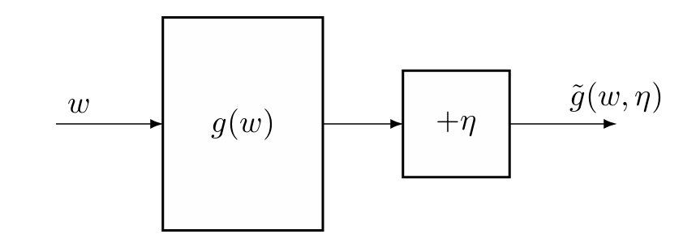
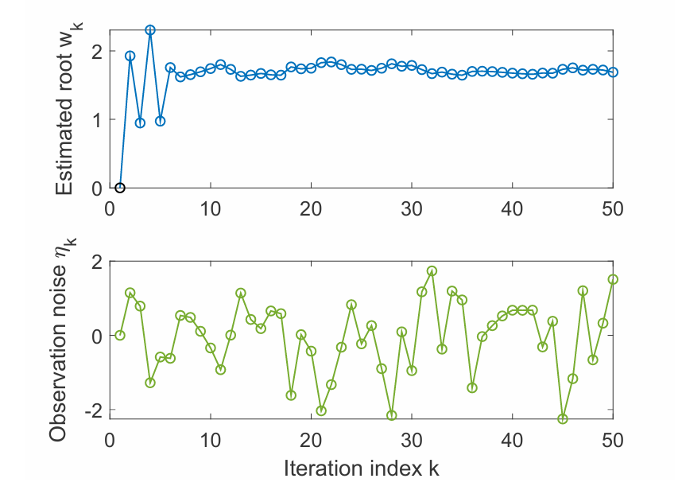
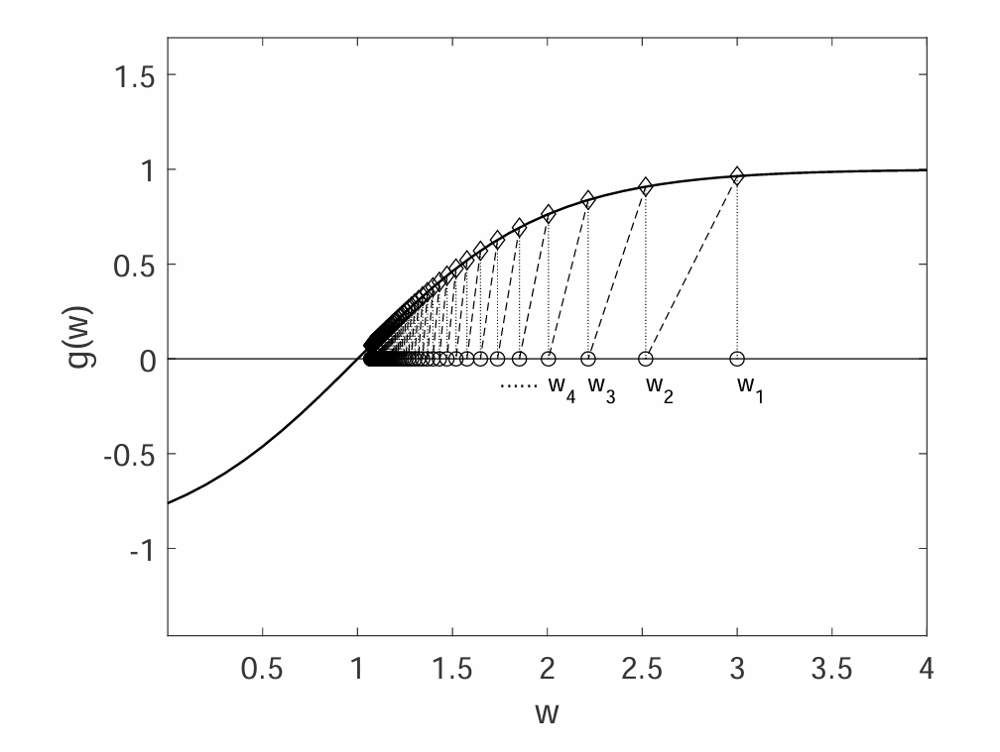
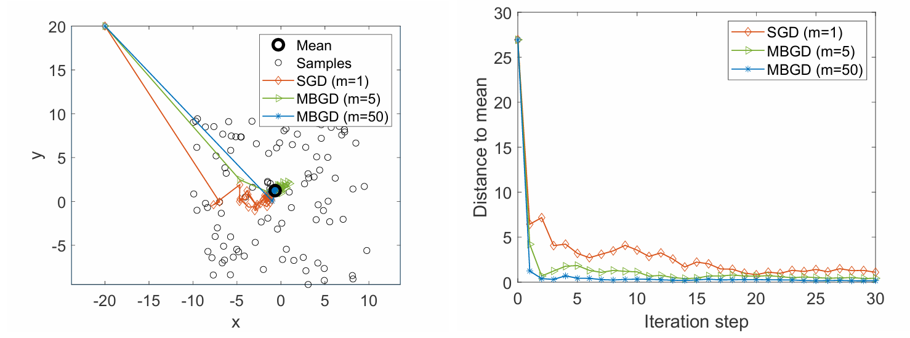

均值估计：从 non-incremental 到 incremental
在强化学习和机器学习中，incremental（增量式）指的是一类逐步更新的方法：每获得一条新数据（或一个完整片段），就立即用它来修正当前估计，而不是等到收集全部数据后再一次性计算。
考虑一个随机变量 X，取值集合为 X。若要估计 E[X]，在 model-free 的情况下，可以采样一系列 i.i.d. 的样本 {xi}i=1n，则 E[X] 可以被这些样本的均值估计
E[X]≈xˉ=n1i=1∑nxi
这实际上就是蒙特卡洛法。根据大数定律可知当 n→∞ 时 xˉ→E[X]。
在计算 xˉ 的过程中，有两种方法，分别是 non-incremental 和 incremental。前者是在收集好所有样本 {xi}i=1n 后一次计算均值得到 xˉ，其弊端是如果样本数量非常大或者采样过程很慢，那么需要等很长时间才能得到 xˉ。后者则采取增量的方式即时获取新值。
具体而言，设
wk+1≐k1i=1∑kxi,k=1,2,…
即前 i 个样本的均值。
为了后续公式形式上的简结，这里用 wk+1 而非 wk 来表示前 k 个样本的均值。
则有
wk=k−11i=1∑k−1xi,k=2,3,…
而 wk+1 可以用 wk 表示：
wk+1=k1i=1∑kxi=k1(i=1∑k−1xi+xk)=k1((k−1)wk+xk)=wk−k1(wk−xk).
即
wk+1=wk−k1(wk−xk)
上述公式可以被用于增量式的计算样本均值 xˉ。就像下面这样：
w1w2w3w4⋮wk+1=x1,=w1−11(w1−x1)=x1,=w2−21(w2−x2)=x1−21(x1−x2)=21(x1+x2),=w3−31(w3−x3)=31(x1+x2+x3),=k1i=1∑kxi.
这种 incremental 计算方法的好处就是每收集到一个新样本就可以立即更新均值，也就是 E[X] 的估计结果。尽管前期估计的 E[X] 可能很不精确，但总比 non-incremental 在收集完样本前什么也没有要好很多，而且当采集的样本越来越多，估计的值也会越来越精确。
进一步地，可以将更新公式推广为
wk+1=wk−αk(wk−xk)
其中 αk>0。在上面的例子中 αk=k1，也因此 wk 可以被显式地写为样本的均值，且当 k→∞ 时收敛到 E[X]。事实上，后面的 Robbins-Monro 算法证明，只要系数 αk 的序列 {αk} 满足一定的条件，wk 就始终能够在 k→∞ 时收敛到 E[X]。
Robbins-Monro 算法
stochastic approximation（随机近似）是指一类用于解决求根问题或优化问题的随机迭代算法。相比于许多其它的算法，例如基于梯度的算法（如牛顿迭代法等），stochastic approximation 非常的强大因为它不需要目标函数的表达式或者导数。**Robbins-Monro（RM）**算法是 stochastic approximation 的一个开创性的工作，著名的 **stochastic gradient descent（SGD，随机梯度下降）**就是它的一个特殊形式。
找零点问题
考虑求下述方程的根
g(w)=0
其中 w∈R 是要求解的未知变量，g:R→R 是一个函数。
许多问题都可以转化为上述的找零点问题。例如对目标函数 J(w) 进行优化，可以转化为求解 g(w)=∇wJ(w)=0；或者要求方程 g(w)=c 的根，可以转化为找 g(w)−c 这个新函数的零点。
如果 g 的表达式或者导数已知，则有很多数值方法（例如牛顿迭代法）可以使用。但如果 g 未知（这实际上也是强化学习 model-free 的情况），那么只能获得 g(w) 带噪声的观察值 g~(w,η)：
g~(w,η)=g(w)+η
其中 η∈R 是观察中产生的误差，也就是噪声。
g~(w,η)=g(w)+η 可以理解为对于输入 w，经过函数 g，我们想得到（看到）的真实值是 g(w)，但实际上由于不可控因素或外界影响，我们的观察会带有噪声 η，因此我们只能看到带有噪声的值 g(w)+η，也就是 g~(w,η)。
所以，当 g 未知时，我们面对的是一个黑箱系统，只有输入 w 和带噪声的输出 g~(w,η) 是已知的（如下图），因此我们的目的就是利用 w 和 g~ 来寻找 g(w)=0 的根。

Robbins-Monro
Robbins-Monro（RM）算法通过利用每次采样 wk 得到的观测值 g~(wk,ηk) 来更新根的估计值，迭代公式为
wk+1=wk−akg~(wk,ηk),k=1,2,3,…
其中 wk 是第 k 次根的估计，g~(wk,ηk) 是第 k 次带噪声的观测值，而 αk>0 是第 k 个正系数。同时，如果满足以下三个条件，则 wk 几乎必然收敛到 g(w)=0 的根 w∗：
- 对于任意 w，都有 0<c1≤∇wg(w)≤c2；
- ∑k=1∞ak=∞ 且 ∑k=1∞ak2<∞；
- E[ηk∣Hk]=0 且 E[ηk2∣Hk]<∞，其中 Hk={wk,wk−1,…}。
上述的内容也被称为 Robbins-Monoro（RM）定理。
对于随机变量序列 {wk} 和随机变量 w∗，如果
P(k→∞limwk=w∗)=1
则称 wk 几乎必然收敛到 w∗。“几乎必然”也称作“以概率 1”或“几乎处处”。
也就是说，除去一个概率为零（不可能发生）的样本路径（即“坏”的结果），所有其他样本路径都使得 wk 趋近于 w∗。虽然不能保证每条随机路径都收敛，但那些不收敛的路径合起来发生的概率是 0。在实际应用中，几乎肯定能观察到收敛。
例子
先通过两个例子来更直观地理解 RM 算法。两个例子都是在 g 未知的情况下，求解 g(w)=0。
第一个例子，假设 g(w)=w3−5 而我们未知，方程 g(w)=0 真实的根为 w∗=51/3≈1.71。假设我们只能观测到输入 w 以及带有噪声的输出 g~(w,η)=g(w)+η，其中 η 是模拟的噪声，遵循 i.i.d. 且服从标准正态分布。利用 RM 算法，初始值 w1=0，系数 ak=k1，由此得到的迭代收敛过程如下图。这个例子体现了即使观测的值 g~ 相比真实值 g 存在误差，但是估计值 wk 依然可以收敛到真实的根。

其实上述例子中的 g(w) 并不完全符合 RM 定理的第一个条件，因此初始值 w1 的选取不是任意的。
第二个例子从直觉上展示 RM 算法收敛的原因，假设 g(w)=tanh(w−1)，方程 g(w)=0 真实的根为 w∗=1。为了方便展示，假设每次观测的噪声 ηk≡0，因此观测值就是真实值，即 g~(wk,nk)=g(wk)。利用 RM 算法，其迭代公式为 wk+1=wk−akg(wk)，得到收敛过程如下图，可以发现 wk 最后收敛到真实的根 1。
在这个例子中，从直觉上来说：
- 当 wk>w∗ 时，有 g(wk)>0，因此 wk+1=wk−akg(wk)<wk。如果 akg(wk) 足够小，那么就有 w∗<wk+1<wk，因此 wk+1 相比 wk 会更靠近 w∗。
- 当 wk<w∗ 时，有 g(wk)<0，因此 wk+1=wk−akg(wk)>wk。如果 ∣akg(wk)∣ 足够小，那么就有 wk<wk+1<w∗，因此 wk+1 相比 wk 会更靠近 w∗。
因此从直觉上可以发现，每次迭代 wk 都会里离根 w∗ 越来越近，wk 会最终收敛到 w∗。

定理说明
下面依次对 Robbins-Monro 定理的每一个条件做详细说明：
-
对于所有的 w，都有 0<c1≤∇wg(w)≤c2：
0<c1≤∇wg(w) 表明 g(w) 要求单调递增；如果 g(w) 是单调递减的，可以通过构造新函数 −g(w) 来实现单调增。
当 RM 算法应用于优化问题，也就是优化目标函数 J(w) 时，问题变为求解 g(w)=∇wJ(w)=0，这种情况下 g(w) 单调增的性质实际上是要求 J(w) 是凸函数，而这在优化问题中其实是一个很常见且合理的假设，因为：
- 任何局部最优解都是全局最优解：对于凸函数，只要找到一个梯度为零的点（即 g(w)=0 的解），这个点就一定是全局最小值点。这极大地降低了优化难度。
- 许多实际问题可以建模为凸问题：线性回归、逻辑回归（正则化后）、支持向量机、岭回归、Lasso 等经典机器学习模型，其损失函数加上凸正则项后整体为凸函数。
∇wg(w)≤c2 表明 g(w) 的梯度要求有上界。这也是上面第二个例子 g(w)=w3−5 不能随便取初始值去迭代的原因。
-
∑k=1∞ak=∞ 且 ∑k=1∞ak2<∞：
后者要求当 k→∞ 时 ak 收敛到 0，而前者要求 ak 收敛到 0 的速度不能太快。
假设观测值 g~(wk,ηk) 有界：
-
由于 RM 算法迭代公式
wk+1−wk=−akg~(wk,ηk)
如果 ak→0，那么 akg~(wk,ηk)→0，因此 wk+1 和 wk 当 k→∞ 时会非常接近，这保证了 wk 的收敛性，否则 ak 不收敛到 0 的话，wk 在 k→∞ 时也会发生震荡。
-
另一方面，根据迭代公式有 w2−w1=−a1g~(w1,η1),w3−w2=−a2g~(w2,η2),w4−w3=−a3g~(w3,η3),…，逐项累加得到
w1−w∞=k=1∑∞akg~(wk,ηk)
如果 ∑k=1∞ak<∞（有界），同时又由于 g~(wk,ηk) 有界，因此 ∣∑k=1∞akg~(wk,ηk)∣ 有界。设常数 b 是它的一个上界，则有
∣w1−w∞∣=k=1∑∞akg~(wk,ηk)≤b
如果初始值 w1 的选取与真实根 w∗ 的距离超过 b，那么这会导致 wk 永远无法收敛到 w∗。因此 ∑k=1∞ak=∞ 保证了任意的初始值都能使迭代能够收敛到真实根 w∗。
一个可行的 {ak} 的选取是
ak=k1
因为有
n→∞lim(k=1∑nk1−lnn)=γ
其中 γ≈0.577 是欧拉常数，因此 ∑k=1∞ak=∞。
另外 Basel 问题得到
k=1∑∞k21=6π2
因此 ∑k=1∞ak2<∞。
但在实际应用中，ak 经常被选取为非常小的常数，尽管不满足 RM 的收敛条件，但也能收敛。
-
E[ηk∣Hk]=0 且 E[ηk2∣Hk]<∞，其中 Hk={wk,wk−1,…}：
{ηk} 是 i.i.d. 的，与 Hk 无关。且这个条件说明了 ηk 并不要求是正态分布的。
定理证明
Dvoretzky’s convergence theorem（待补充）
应用：均值估计
定义函数 g(w)：
g(w)=w−E[X]
显然，g(w)=0 的根就是随机变量 X 的期望 E[X]。对于每一次输入 w，我们只能观测到 g(w) 带噪声的观测值 g~=w−x，其中 x 是 X 的一个采样。因此考虑使用 RM 算法去寻找 g(w) 的零点，也即 X 的期望：选择合适的正系数 ak 满足 ∑k=1∞ak=∞ 且 ∑k=1∞ak2<∞，且采集的样本 {xk} 是 i.i.d.，利用迭代式
wk+1=wk−αkg~(wk,ηk)=wk−αk(wk−xk)
根据 RM 定理，当 k→∞ 时 wk 收敛到 E[X]。
g~ 也可以被写为关于噪声 η 的形式：
g~(w,η)=w−x=(w−E[X])+(E[X]−x)=g(w)+η
其中 η=E[X]−x 就是观测产生的噪声，也就是误差。
根据 RM 算法在随机变量 X 均值估计上的利用，可以发现算法的收敛性与随机变量 X 的分布无关。
随机梯度下降（SGD）
**stochastic gradient descent（SGD，随机梯度下降）**是 gradient descent（GD，梯度下降）算法的一种，广泛应用于机器学习中的优化问题。SGD 实际上是 RM 算法的一种特殊形式。
GD
考虑下面的优化问题
wminJ(w)=E[f(w,X)]
其中 w 是待优化的参数，而 X 是随机变量，w 和 X 可以是向量或标量；而函数 f(⋅) 是一个标量。
上述优化问题的直接解决方法是使用 GD。注意到 E[f(w,X)] 的梯度为 ∇wE[f(w,X)]=E[∇wf(w,X)]，因此梯度的更新公式为
wk+1=wk−αk∇wJ(wk)=wk−αkE[∇wf(wk,X)]
SGD
GD 的公式中需要计算 E[∇wf(wk,X)] 的值。如果随机变量 X 分布已知（model-based），则可以直接公式化计算该期望值；否则（model-free，这是更常见的情况），需要采集大量 i.i.d. 的随机变量 X 的样本 {xi}i=1n 来估计该期望值（也就是蒙特卡洛法）：
E[∇wf(wk,X)]≈n1i=1∑n∇wf(wk,xi)
因此梯度的更新公式就变为了
wk+1=wk−nαki=1∑n∇wf(wk,xi)
当 {xi}i=1n 是全部样本时，上述公式实际上是 batch stochastoc gradient（BGD，批量梯度下降）。
当使用上面的公式更新时仍然存在问题：每次迭代更新需要等一批样本的观测值全部收集完毕才能进行。因此，如果样本是 one by one 的采集，可以每采集到一个样本就更新一次梯度：
wk+1=wk−αk∇wf(wk,xk)
其中 xk 是第 k 个时间步采集的样本。上述公式就是著名的 SGD 算法，被称作 stochastic 正是因为它依靠随机的样本 {xk}。
观察 SGD 的梯度更新公式，可以发现 SGD 算法实际上可以看作 RM 算法的一个应用，其收敛性可以由 RM 定理证明。记 g(w)=E[∇wf(w,X)]，SGD 迭代公式中的 ∇wf(wk,xk) 就是对 X 采样 xk 得到的 g(wk) 观测值 g~，可以写为
∇wf(wk,xk)=E[∇wf(wk,X)]+(∇wf(wk,xk)−E[∇wf(wk,X)])≐E[∇wf(wk,X)]+ηk=g(wk)+ηk≐g~(wk,ηk)
其中 ηk 是第 k 个时间步观测带来的噪声。由于 {xk} 是 i.i.d. 的，因此 Exk[∇wf(wk,xk)]=EX[∇wf(wk,X)]，从而
E[ηk]=E[∇wf(wk,xk)−E[∇wf(wk,X)]]=Exk[∇wf(wk,xk)]−EX[∇wf(wk,X)]=0
当 αk 选取合适的值，wk 最终能够收敛到 J(w) 的极值点 w∗。
事实上，SGD 要解决的优化问题，即求 J(w)=E[f(w,X)] 的最值，可以转化为求 J(w) 的梯度 ∇wJ(w)=0 的根，也就是 g(w)=0 的根，这显然可以用 RM 算法去解决，这就从另一个角度得到了 SGD 算法。
应用：均值估计
可以精心设计一个关于随机变量 X 的待优化目标函数 J(w)，通过应用 SGD 算法间接得到 X 的均值估计 E[X]。
考虑下面的优化问题
wminJ(w)=E[21∥w−X∥2]≐E[f(w,X)]
其中 f(w,X)=21∥w−X∥2 且梯度为 ∇wf(w,X)=w−X，显然最优解为 ∇wJ(w)=0 的根，为 w∗=E[X]。因此该优化问题等价于均值估计问题。
J(w) 的 GD 公式为
wk+1=wk−αk∇wJ(wk)=wk−αk∇wE[f(wk,X)]=wk−αkE[∇wf(wk,X)]=wk−αkE[wk−X]
由于 E[wk−X] 未知（model-free），因此考虑使用 SGD：
wk+1=wk−αk∇wf(wk,xk)=wk−αk(wk−xk).
其中 xk 为第 k 个时间步对随机变量 X 的采样。
可以发现上述 SGD 的迭代公式与第一部分“均值估计：从 non-incremental 到 incremental”中推广的均值估计公式一样。后者其实就是 SGD 的应用。
收敛性质
既然 SGD 的梯度更新中，梯度的估计是随机的，那么 SGD 迭代的收敛过程是否也是随机的、不稳定的呢？
事实上，SGD 通常拥有很高的收敛效率，并且它拥有一个很有趣的收敛性质：当 wk 离最优点 w∗ 非常远时，SGD 的收敛效果和 GD 很类似；只有当 wk 离最优点 w∗ 非常近时，SGD 的收敛才会表现出更多的随机性。
对比 GD 中的真实梯度与 SGD 中的估计梯度，它们的相对误差为
δk≐∣E[∇wf(wk,X)]∣∣∇wf(wk,xk)−E[∇wf(wk,X)]∣
设 w∗ 为最优点，则 E[∇wf(w∗,X)]=0。因此相对误差可以写为
δk=∣E[∇wf(wk,X)]−E[∇wf(w∗,X)]∣∣∇wf(wk,xk)−E[∇wf(wk,X)]∣=∣E[∇w2f(w~k,X)(wk−w∗)]∣∣∇wf(wk,xk)−E[∇wf(wk,X)]∣
其中第二个等式是根据拉格朗日中值定理，w~k 介于 wk 与 w∗ 之间。
假设 f 是严格凸函数，且对于任意的 w 和 X 都有 ∇w2f≥c>0（这实际上遵循了 RM 收敛条件）。因此 δk 的分母可以写为
E[∇w2f(w~k,X)(wk−w∗)]=E[∇w2f(w~k,X)]∣wk−w∗∣≥c∣wk−w∗∣
由此可得
δk≤distance to the optimal solutionc∣wk−w∗∣∣∇wf(wk,xk)stochastic gradient−E[∇wf(wk,X)]true gradient∣
从上式可以直观地看到，相对误差 δk 与 wk 和 w∗ 之间的距离 ∣wk−w∗∣ 成反比：与当 wk 与 w∗ 距离很远时，相对误差 δk 会很小，导致 SGD 与 GD 的收敛效果很类似；而当 wk 与 w∗ 距离很近时，δk 上界很大，其取值可能很大，也可能很小，导致 SGD 的收敛会展现出更大的随机性。
假设随机变量 X∈R2 是二维平面中的点，限制在以原点 (0,0) 为中心、边长为 20 的正方形中，且期望 E[X]=0。下图直观地展示了分别使用 SGD、mini-batch GD（batch=5）和 mini-batch（batch=50）方法，对随机变量 X 采样 100 个 i.i.d. 的样本，对 X 均值估计的效果。可以看到即使初始值离真实值非常远，SGD 也能够很快地收敛到真实值的附近，但在真实值附近表现出了较大的随机性。

BGD 和 mini-batch GD
在 GD 的梯度更新中，SGD 每次迭代使用一个样本估计梯度。如果每次迭代利用所有的样本估计梯度，就是 batch gradient descent（BGD，批量梯度下降）；如果每次迭代利用一部分样本估计梯度，就是 mini-batch gradient descent（MBGD，小批量梯度下降）。
具体而言，对于 J(w)=E[f(w,X)] 的优化问题，在给予随机变量 X 的采样 {xi}i=1n 下，它们的梯度更新公式分别为
wk+1wk+1wk+1=wk−αkn1i=1∑n∇wf(wk,xi),=wk−αkm1j∈Ik∑∇wf(wk,xj),=wk−αk∇wf(wk,xk)(BGD)(MBGD)(SGD)
其中 Ik 是第 k 个时间步获得的所有样本索引 {1,…,n} 的一个采样的子集（也要求 i.i.d.），其大小 ∣Ik∣=m。
当 MBGD 中 Ik 大小 m=n 时，MBGD 并不等同于 BGD，因为 MBGD 是从所有样本中随机采集 n 次获得的样本子集，这些样本间可能存在重复；而 BGD 是直接使用所有样本。这也是为什么这里强调 Ik 是**“采样的”**子集。
从上一部分“收敛性质”的例子中也可以看到，相比于 SGD，mini-batch 由于每次估计梯度使用了更多的样本，会获得更加精确的梯度估计，导致收敛更快、更稳。